优惠券敏感人群分析
源代码地址放在Reward处。
互联网给我们老百姓带来的最直接的福利要从补贴开始说起，从滴滴快的烧钱大战，美团饿了么的外卖红包，补贴的硝烟似乎从未停止。补贴不仅仅是发发优惠券那么简单的事，补贴是一门纯技术活。告别了快速占领市场时粗犷的烧钱方式，进入成熟期互联网公司大都开始了精细化运营，如何把补贴用在最需要的用户身上，如何在降低补贴的同时带来更多用户和订单量的提升，毕竟商业变现是每个公司必须面对的问题，实现盈利就要降低成本和提高收入。这一次，将让我们一起来探讨下高频产品外卖行业的高效补贴方式。 如何选定筛选优惠敏感度的指标，来发现优惠敏感用户，一般认为是下单意愿强弱受优惠和价格高低影响大的用户，而运营要做的就是根据用户的消费水平，历史补贴情况，及主动寻找优惠行为等分析来确定如何通过补贴提高用户下单率。主动获取优惠维度筛选，比如有以下几个行为：分享渠道领取优惠券、参加商家满减凑单活动、具有拆单行为的用户、高频点折扣菜、从banner活动落地页获得优惠。综合考虑用户的历史订单补贴率、历史单均价以及主动获取优惠行为，初步确定这些指标后，即可以制定初版探索方案验证这些指标是否能带来提升，然后再进入数据分析挖掘阶段寻找最佳阈值。 我们这次通过完成天池大数据竞赛的一个赛题，来更加深入理解这个问题。我们的目标很简单，就是通过已有的数据分析出用户接下来的是否会使用优惠券。
一、赛题背景
O2O（Online to Offline）消费 O2O：是指将线下的商务机会与互联网结合，让互联网成为线下交易的平台 以优惠券盘活老用户或吸引新客户进店消费是O2O的一种重要营销方式
1.赛题目标
个性化投放优惠券，提高核销率 通过分析建模，精准预测用户是否会在规定时间内使用相应优惠券 已知：用户在2016年1月1日至2016年6月30日之间真实线上线下消费行为 预测：用户在2016年7月领取优惠券后15天以内的使用情况 评价标准：优惠券核销预测的平均AUC（ROC曲线下面积）。即对每个优惠券coupon_id单独计算核销预测的AUC值，再对所有优惠券的AUC值求平均作为最终的评价标准。 关于AUC的含义与具体计算方法，可参考维基百科
2.数据简介
一共四个表格，前两个表格是数据，第三个是用来预测的数据，第四个是提交的文件格式。：
Table 1: 用户线下消费和优惠券领取行为，ccf_offline_stage1_train.csv
Table 2: 用户线上点击/消费和优惠券领取行为，ccf_online_stage1_train
Table 3：用户O2O线下优惠券使用预测样本，ccf_offline_stage1_test_revised.csv
Table 4：选手提交文件字段，其中user_id,coupon_id和date_received均来自Table 3,而Probability为预测值
TABLE 1： 用户线下消费和优惠券领取行为 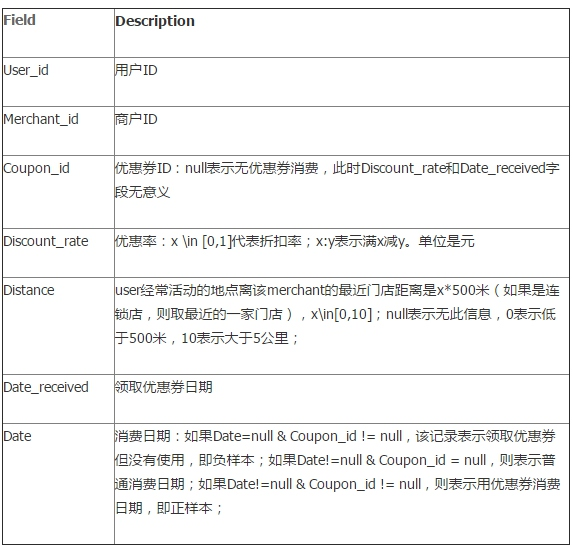
Table 2: 用户线上点击/消费和优惠券领取行为 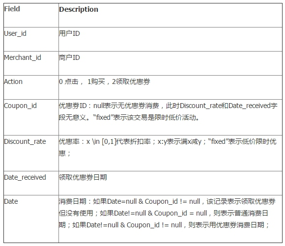
Table 3：用户O2O线下优惠券使用预测样本 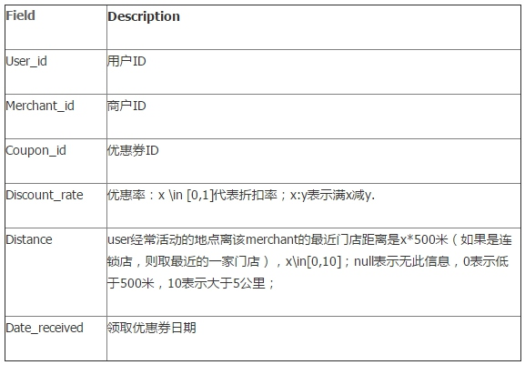
Table 4选手提交文件字段 其中user_id,coupon_id和date_received均来自Table 3,而Probability为预测值 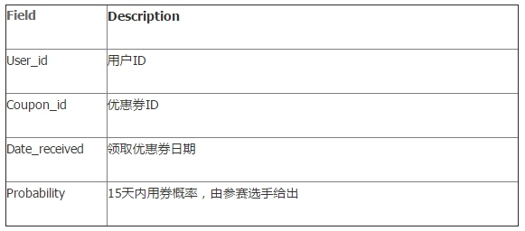
二、初步分析和项目设计
1.认识数据
TABLE1 分析结构
数据采样： 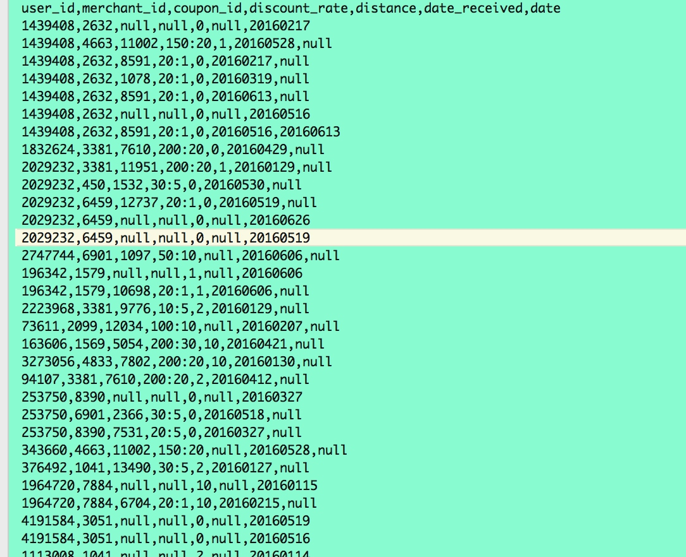
特点： – 标题：用户线下消费和优惠券领取行为 – 场景：线下 – 行为：消费、优惠券领取 – 数据：优惠券领取、使用情况，消费情况，用户常活动地点与最近门店距离 分析1：用户行为有三种情况 – 领了优惠券 && 未消费 => 负样本 （Date=null & Coupon_id != null） – 没领优惠券 && 已消费（Date!=null & Coupon_id = null） – 领了优惠券 && 已消费（Date!=null & Coupon_id != null） – 总结：本数据作为刻画用户特点的主要依据较为合理 分析2：优惠率 – 总结：有可能用户会根据优惠率来决定是否进行消费 分析3：距离 – 离用户近的门店可能会总领取优惠券，但不一定会使用。 – 离用户远的门店如果有优惠券，则可能会为了很大的优惠率专程去使用。 总结 – 本数据集主要刻画线下用户特征。
TABLE 2 分析
数据采样： 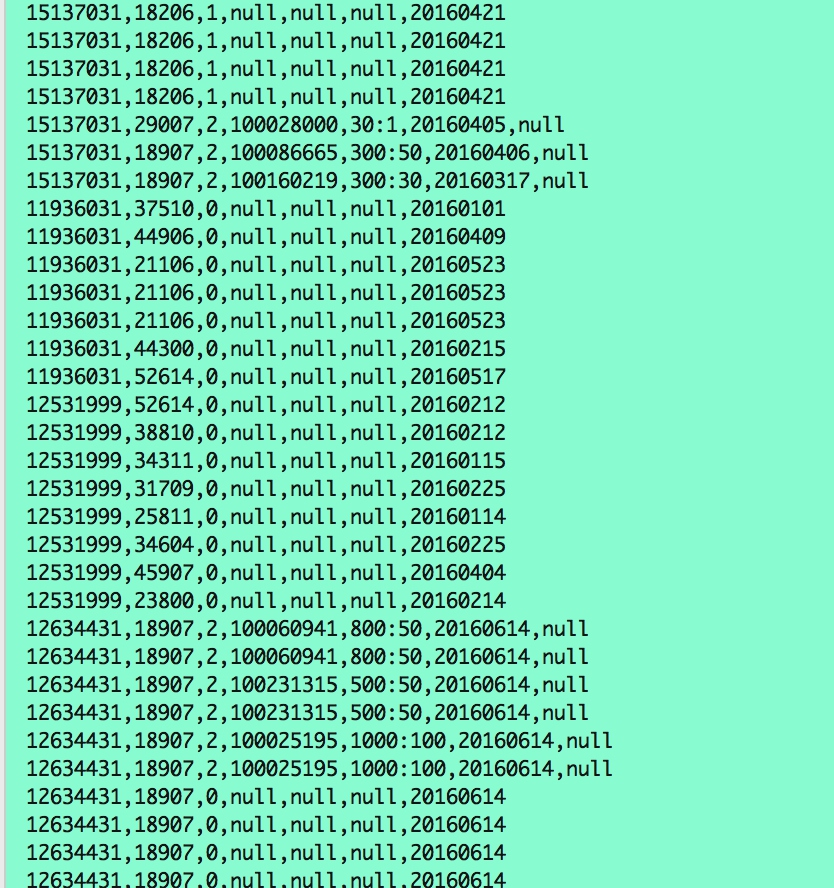
特点： – 标题：用户线上点击/消费和优惠券领取行为 – 场景：线上 – 行为：点击、消费、优惠券领取 – 数据：用户是否点击。购买。领取优惠券。 分析1：用户行为有三种情况 – 领了优惠券 && 未消费 = 负样本（Date=null & Coupon_id != null） – 没领优惠券 && 已消费 （Date!=null & Coupon_id = null） – 领了优惠券 && 已消费 （Date!=null & Coupon_id != null） 分析2：用户点击、消费、优惠券情况 – 用户点击了 && 没领优惠券 && 未消费 => 负样本 – 用户点击了 && 领了优惠券 && 未消费 – 用户点击了 && 领了优惠券 && 已消费 – 用户点击了 && 没领优惠券 && 已消费 – 用户没点击 总结 – 本数据集主要刻画线上用户特征。
然后大家可以针对数据做一些统计然后将数据进行可视化展示，不过网络上已经有人做好了统计，我们直接从网络上面下载过了，下面是基本的一些指标： 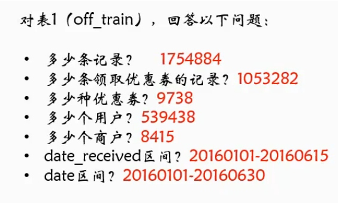
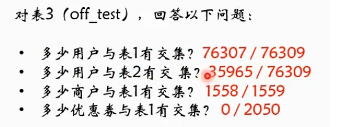
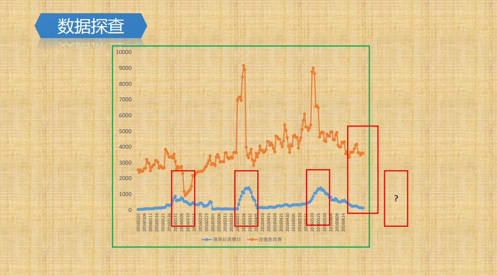
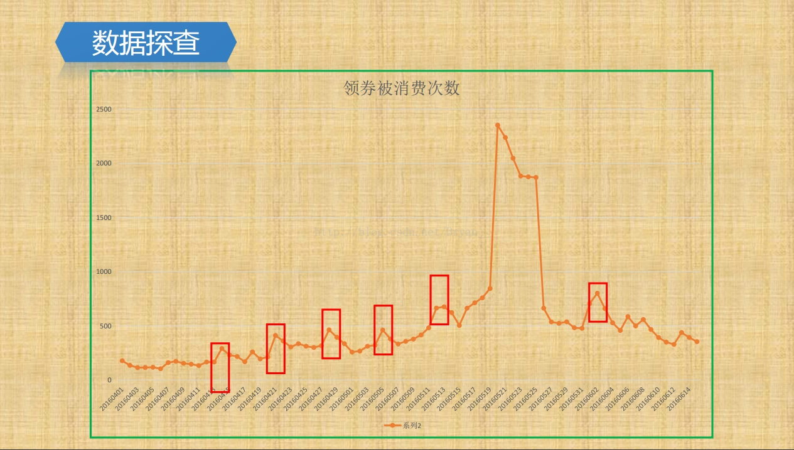
2.项目设计
提供数据的区间是2016-01-01~2016-06-30，预测七月份用户领券使用情况，即用或者不用，转化为二分类问题，然后通过分类算法预测结果。首先就是特征工程，其中涉及对数据集合的划分，包括提取特征的区间和训练数据区间。接着就是从特征区间中提取特征，包括用户特征、商户特征、优惠券特征、用户商户组合特征、用户优惠券组合特征。然后使用GBDT、RandomForest、LR进行基于rank的分类模型融合，模型完成以后我们需要进行验证。
3.数据预览和简单实现
为了更加深入理解项目目标，我们通过python脚本一步一步理解一下数据，同时熟悉一下python相关的API的使用，对数据进行简单的统计。
1. 分析正负数据样本
新建一个python脚本tianchi_1.py，
加上下面的代码：
# coding=utf-8
import pandas as pd
path_to_offline = "~/Desktop/hongya/tmp/day10/ccf_offline_stage1_train.csv"
data = pd.read_csv(path_to_offline)
print(data.head())
print(data.shape[0])
print(data.shape[1])
# 最终发现数据有：1754884行
# 我们发现 其中有很多Coupon_id为null的数据。我们做的是优惠券使用预测，可是这些数据都没有用优惠劵，所以，首先将这些数据挑选出来。
# 不为空的数据
data1 = data[data['coupon_id'] != "null"]
print(data1.head())
print(data1.shape)
# 为空的数据
data2 = data[data['coupon_id'] == "null"]
print(data2.head())
print(data2.shape)
# 最终发现null数据有：701602行，不为空的：1053282行，保存为.csv备用
# 这两段代码保存数据
data1.to_csv('ccf_offline_stage1_train_NoNull.csv',index=False,header=True)
data2.to_csv('ccf_offline_stage1_train_Null.csv',index=False,header=True)
print "检查数据"
# 首先检查没有优惠券的数据
data = data2
test = data[data['date'] == "null"]
print(test.head())
print("没有优惠券的数据中，没有消费的条数为：")
print(test.shape[0])
# 这里打印出来发现没有消费的条数为0？
# 阿里提供数据的时候提供的都是消费数据，因为没有领取优惠劵，也没有实际消费的，在阿里不会能留下数据给我们！
# 所以，我们在预测的时候，如果没有领取优惠券，可以直接预测为消费！ 当然数据里面没有这种情况。
# 再看优惠券不为空的数据集合
data = data1
test1 = data[data['date'] == "null"]
print(test1.head())
print("有优惠券的数据中，没有消费的条数为：")
print(test1.shape[0])
test1.to_csv('ccf_offline_stage1_train_N.csv', index=False, header=True)
test2 = data[data['date'] != "null"]
print(test2.head())
print("有优惠券的数据中，并且消费的条数为：")
print(test2.shape[0])
test2.to_csv('ccf_offline_stage1_train_P.csv', index=False, header=True)
# 正样本：75382个 负样本 977900个
# 那么平均的使用率为75382/1053282=0.071569
print (test2.shape[0] * 1.0 / (test1.shape[0] + test2.shape[0]))
相关代码的含义我们已经解释清楚了，只需要大家根据注释一步一步运行即可。另外最后运行完成后会在当前代码下生成四份数据，作为接下来的数据实验样本。
2. 简单进行topN分析
重新新建一个python文件tianchi_2.py，添加下面的代码，一步一步运行查看。
# coding=utf-8
import pandas as pd
path_to_offline = "~/Desktop/hongya/tmp/day10/ccf_offline_stage1_train.csv"
path_to_online = "~/Desktop/hongya/tmp/day10/ccf_online_stage1_train.csv"
data = pd.read_csv(path_to_offline)
# 输出排名前列和后列的商户ID ，发现了两级分化严重啊，小店铺真的可怜，看来不一定做生意就能赚钱啊。
d1 = data['merchant_id']
print(d1.value_counts())
# 输出排名前列和后列的用户ID ，发现用户层两级分化更严重啊，土豪的日志就是买买买，但是穷人们。。。
d1 = data['user_id']
print(d1.value_counts())
# 直观感觉土豪估计以后还是会买买买，穷人基本上不会买了。中间层才有数据分析和挖掘的价值。
# 同理我们统计一下线上的店铺信息
print "统计线下信息"
data = pd.read_csv(path_to_online)
# 线上线下就是不一样，线上交易明显量更多
d1 = data['merchant_id']
print(d1.value_counts())
# 输出排名前列和后列的用户ID ，发现线上用户消费更多，线上土豪的更土豪了
d1 = data['user_id']
print(d1.value_counts())
3.特征工程
然后可以用一个简单的模型运行一下，思路很简单，就是先提取特征和正负例样本，生成模型，然后对数据进行预测。我们直接用下面的几个特征：
#用户相关特征：
#FUser1 线下领取优惠券后消费次数
#FUser2 线下消费总次数
#商户相关特征：
#FMer1 线下总领取优惠券次数
#FMer2 线下总领取优惠券后消费次数
#FMer3 线下总消费次数
首先我们提取用户特征，新建python文件tianchi_3.py，添加下面的代码，提取用户的两个特征，保存到文件中：
# coding=utf-8
# coding=utf-8
import pandas as pd
path_to_offline = "/Users/dengziming/Desktop/hongya/tmp/day10/ccf_offline_stage1_train.csv"
path_to_online = "/Users/dengziming/Desktop/hongya/tmp/day10/ccf_online_stage1_train.csv"
OffTrain = pd.read_csv(path_to_offline, low_memory=False)
# 头文件信息，输出：user_id,merchant_id,coupon_id,discount_rate,distance,date_received,date
print OffTrain.head()
# 把其中出现的所有的用户ID都统计出来
FUser = OffTrain[['user_id']]
print("FUser.shape=", FUser.shape)
# 去重，总共有539438个独立用户
FUser.drop_duplicates(inplace=True)
OffTrainUser = FUser.shape[0]
print("OffTrainUser=", OffTrainUser)
FUser = FUser.reset_index(drop=True)
# 读取正样本，总共75382个正样本
OffTrainP = pd.read_csv('ccf_offline_stage1_train_P.csv')
OffTrainPNumber = OffTrainP.shape[0]
print("OffTrainPNumber=", OffTrainPNumber)
OffTrainPperUser = OffTrainPNumber * 1.0 / OffTrainUser
# 每个独立用户可能购买的几率是13.974173%
print("OffTrainPperUser=", OffTrainPperUser)
# 寻找同样的ID在P样本中出现的次数
# 得到userid列
t = OffTrainP[['user_id']]
# 添加 Feature1，线下消费总次数
t['FUser1'] = 1
# 对数据进行求和，得到每个userid的购买次数
t = t.groupby('user_id').agg('sum').reset_index()
# join操作
FUser = pd.merge(FUser, t, on=['user_id'], how='left')
print(FUser.head(5))
# 把所有NaN填充为0
FUser = FUser.fillna(0)
print(FUser.head(5))
t = OffTrain[OffTrain['date'] != "null"]
t = t[['user_id']]
# 添加特征2，领取优惠券后消费的次数
t['FUser2'] = 1
# 求和
t = t.groupby('user_id').agg('sum').reset_index()
# join
FUser = pd.merge(FUser, t, on=['user_id'], how='left')
FUser = FUser.fillna(0)
print(FUser.head(5))
print(FUser.FUser2.describe())
FUser.to_csv('FUser.csv', index=False, header=True)
运行完后会生成用户特征文件：FUser.csv。
然后我们提取商户特征，新建python文件tianchi_4.py，添加下面的代码：
# coding=utf-8
import pandas as pd
path_to_offline = "~/Desktop/hongya/tmp/day10/ccf_offline_stage1_train.csv"
path_to_online = "~/Desktop/hongya/tmp/day10/ccf_online_stage1_train.csv"
OffTrain = pd.read_csv(path_to_offline, low_memory=False)
# 头文件信息，输出：user_id,merchant_id,coupon_id,discount_rate,distance,date_received,date
print OffTrain.head()
# 把线下商户ID都提取出来
FMer = OffTrain[['merchant_id']]
print("FMer.shape=%s", FMer.shape)
# 去掉重复的
FMer.drop_duplicates(inplace=True)
print("FMer.shape=", FMer.shape)
# 重新建立索引
FMer = FMer.reset_index(drop=True)
t = OffTrain[OffTrain['coupon_id'] != "null"] # 取出所有有领取优惠券的部分
# print(t.shape)
t = t[['merchant_id']]
t['FMer1'] = 1 # 特征1
t = t.groupby('merchant_id').agg('sum').reset_index() # 求和
# print(t.head())
FMer = pd.merge(FMer, t, on=['merchant_id'], how='left')
FMer = FMer.fillna(0)
print(FMer.head())
# FMer2 线下总领取优惠券后消费次数
t = OffTrain[OffTrain['coupon_id'] != "null"] # 取出所有有领取优惠券的部分
print(t.shape)
t = t[t['date'] != 'null']
print(t.shape)
t = t[['merchant_id']]
t['FMer2'] = 1 # 特征2
t = t.groupby('merchant_id').agg('sum').reset_index() # 求和
# print(t.head())
FMer = pd.merge(FMer, t, on=['merchant_id'], how='left')
FMer = FMer.fillna(0)
print(FMer.head())
# FMer3 线下总消费次数
t = OffTrain[OffTrain['date'] != "null"] # 取出所有有消费的部分
print(t.shape)
t = t[['merchant_id']]
t['FMer3'] = 1 # 特征3
t = t.groupby('merchant_id').agg('sum').reset_index() # 求和
# print(t.head())
FMer = pd.merge(FMer, t, on=['merchant_id'], how='left')
FMer = FMer.fillna(0)
print(FMer.head())
FMer.to_csv('FMer.csv', index=False, header=True)
其实和之前的是相似的,运行完成后会生成你的FMer.csv文件。
4.建模预测
我们选择使用python的随机森林模型进行建模预测。新建tianchi_5.py,添加下面的代码：
# coding=utf-8
import pandas as pd
import numpy as np
import time
from sklearn.ensemble import RandomForestRegressor
path_to_offline = "/Users/dengziming/Desktop/hongya/tmp/day10/ccf_offline_stage1_train.csv"
path_to_online = "/Users/dengziming/Desktop/hongya/tmp/day10/ccf_online_stage1_train.csv"
path_to_test = "/Users/dengziming/Desktop/hongya/tmp/day10/ccf_offline_stage1_test_revised.csv"
path_to_offline_train_N = 'ccf_offline_stage1_train_N.csv'
path_to_offline_train_P = 'ccf_offline_stage1_train_P.csv'
path_to_FMer = "FMer.csv"
path_to_FUser = "FUser.csv"
path_to_Result = "sample_submission20180401.csv"
OffTrain = pd.read_csv(path_to_offline, low_memory=False)
# 头文件信息，输出：user_id,merchant_id,coupon_id,discount_rate,distance,date_received,date
print OffTrain.head()
# 读取特征文件
FMer = pd.read_csv(path_to_FMer) # 商户特征
FUser = pd.read_csv(path_to_FUser) # 用户特征
# 读取样本数据
OffTrainN = pd.read_csv(path_to_offline_train_N)
OffTrainP = pd.read_csv(path_to_offline_train_P)
# 加入FLag区分P和N
OffTrainN['Flag'] = 0
OffTrainP['Flag'] = 1
# 负样本建立特征列
print("OffTrainN", OffTrainN.shape)
# 和特征join，添加特征
OffTrainN = pd.merge(OffTrainN, FUser, on=['user_id'], how='left')
print OffTrainN.head()
OffTrainN = pd.merge(OffTrainN, FMer, on=['merchant_id'], how='left')
print(OffTrainN.shape)
print (OffTrainN.head())
# 正样本建立特征列
print("OffTrainP", OffTrainP.shape)
# 和特征join，添加特征
OffTrainP = pd.merge(OffTrainP, FUser, on=['user_id'], how='left')
OffTrainP = pd.merge(OffTrainP, FMer, on=['merchant_id'], how='left')
print(OffTrainP.shape)
OffTrainP.head()
# 生成Flag数组
OffTrainFlagP = OffTrainP['Flag'].values
print("OffTrainFlagP", OffTrainFlagP)
print(OffTrainFlagP.shape)
OffTrainFlagN = OffTrainN['Flag'].values
print("OffTrainFlagN", OffTrainFlagN)
print(OffTrainFlagN.shape)
# 合并Flag
OffTrainFlag = np.append(OffTrainFlagP, OffTrainFlagN)
print("OffTrainFlag", OffTrainFlag)
print(OffTrainFlag.shape[0])
# 生成特征数组
OffTrainFeatureP = OffTrainP[['FUser1', 'FUser2', 'FMer1', 'FMer2', 'FMer3']].values
print("OffTrainFeatureP", OffTrainFeatureP)
print(OffTrainFeatureP.shape)
OffTrainFeatureN = OffTrainN[['FUser1', 'FUser2', 'FMer1', 'FMer2', 'FMer3']].values
print("OffTrainFeatureN", OffTrainFeatureN)
print(OffTrainFeatureN.shape)
# 合并特征
OffTrainFeature = np.append(OffTrainFeatureP, OffTrainFeatureN, axis=0)
print("OffTrainFeature", OffTrainFeature)
print(OffTrainFeature.shape)
'''训练模型'''
print "开始计算模型"
# 使用模型
rf = RandomForestRegressor() # 这里使用了默认的参数设置
rf.fit(OffTrainFeature, OffTrainFlag) # 进行模型的训练
# 使用模型预估
temp = rf.predict(OffTrainFeature)
start = time.time()
err = 0
for i in range(OffTrainFeature.shape[0]):
t = temp[i] - OffTrainFlag[i]
if (t > 0.5) | (t < -0.5):
err += 1
err = err * 1.0 / OffTrainFeature.shape[0]
end = time.time()
print ("建模时间：")
print(end - start)
print ("模型在测试数据上的精度：")
print(1 - err)
# 读取测试集
Test = pd.read_csv(path_to_test)
Test = pd.merge(Test, FUser, on=['user_id'], how='left')
Test = pd.merge(Test, FMer, on=['merchant_id'], how='left')
Test['Flag'] = 0.0
print(Test.shape)
print(Test.head())
Test = Test.fillna(0)
TestFeature = Test[['FUser1', 'FUser2', 'FMer1', 'FMer2', 'FMer3']].values
print(TestFeature.shape)
print(TestFeature)
start = time.time()
temp = rf.predict(TestFeature)
end = time.time()
print(end - start)
Test['Flag'] = temp
Test.head()
Test.to_csv(path_to_Result, columns=['user_id', 'coupon_id', 'date_received', 'Flag'],
index=False, header=False)
到这里我们的结果数据就产生了，最后我们计算了模型在测试数据上的精度为：0.958539118679，还算比较高，当然在实际提交到天池官网精度只是略大于0.5而已。
三、开发环境搭建
我们使用spark进行数据分析，实际上你可以将表格保存到hive上面，使用hive进行数据的清洗，但是我们为了避免遇到很多环境的问题，直接使用spark读取文件，进行数据清洗即可。
1.新建项目
我们以前新建项目都是打开IDEA，新建一个maven项目hongya-coupon-analyze，选择scala的archetype，填好GroupId和ArtificialId：
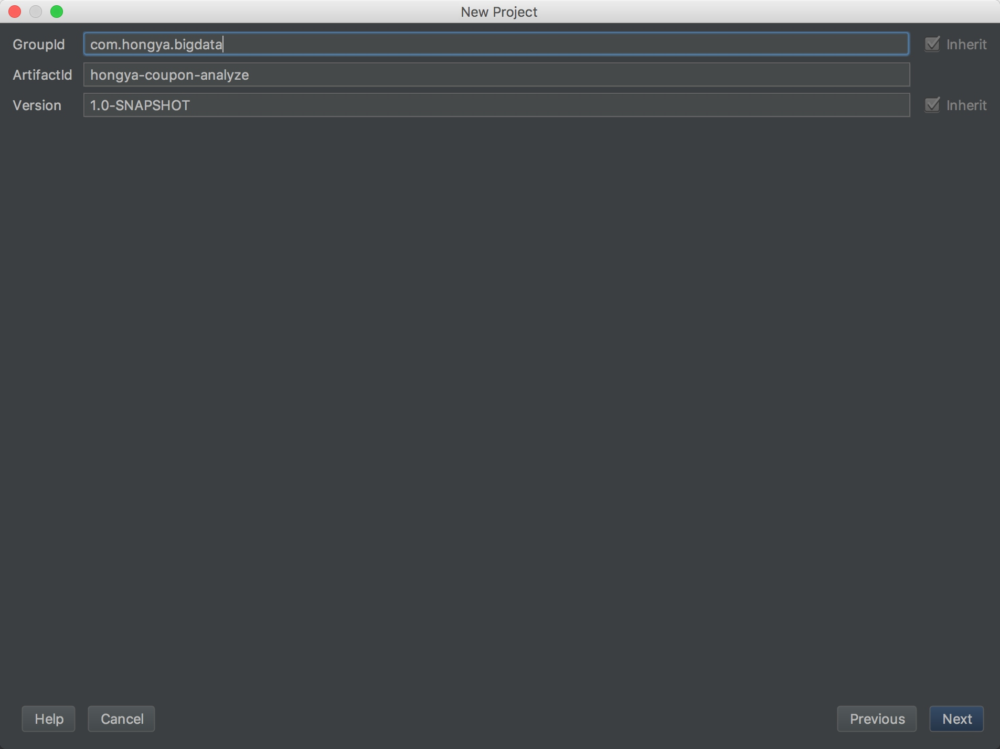
然后配置maven地址等，这个步骤以及做过很多遍，这里就不截图了。
然后我们可能要新建一些模块，由于模块类型我们没定，所以暂时可以放在下一步中完成。 注意在pom文件添加多环境配置：
<profiles>
<profile>
<!-- 本地开发环境 -->
<id>dev</id>
<properties>
<package.environment>dev</package.environment>
<spark.scope>compile</spark.scope>
</properties>
<activation>
<activeByDefault>true</activeByDefault>
</activation>
</profile>
<profile>
<!-- 测试环境 -->
<id>test</id>
<properties>
<package.environment>test</package.environment>
<spark.scope>provided</spark.scope>
</properties>
</profile>
<profile>
<!-- 生产环境 -->
<id>prod</id>
<properties>
<package.environment>prod</package.environment>
<spark.scope>provided</spark.scope>
</properties>
</profile>
</profiles>
2.加入依赖
我们这次的开发需要使用到的依赖是spark-core和spark-mllib，开发也有可能用到其他的库，到时候再加入即可，我们完整的pom文件的依赖可以参考项目。我们删掉项目新建完成后自带的测试scala文件和依赖。
三、项目开发
项目开发按照上面的步骤进行。
1.数据清洗部分开发
由于我们是多环境下工作，我们需要解析配置文件，首先新建一个Settings类，用来解析配置，路径为 com.hongya.bigdata.coupon.util,相关代码可以参考以前的代码，其实就是读取配置：
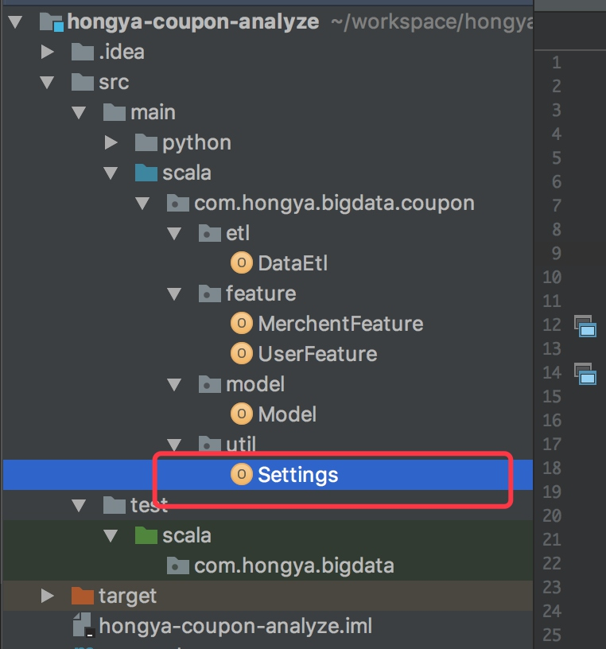
我们通过读取数据进行ETL操作，在com.hongya.bigdata.coupon.etl包下新建DataEtl类，然后添加数据ETL的代码，代码主要是读取数据，将消费和未消费的数据取出分别保存，相关代码可以查看我们给的源码：
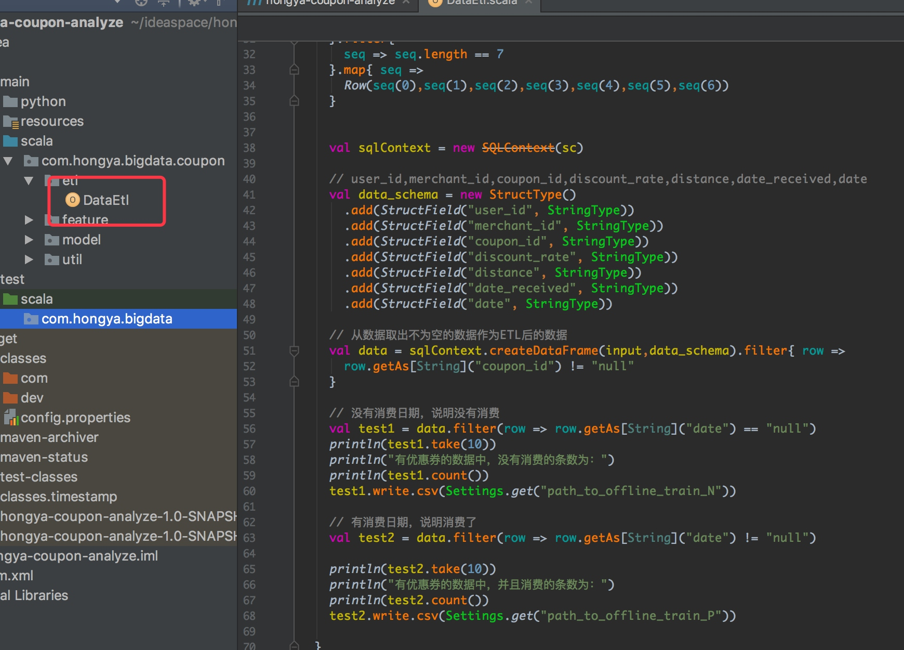
然后我们在src/main/resources下面新建dev文件夹，添加config.properties文件。添加Etl需要的三个文件路径，分别是输入的offline数据路径，正负例样本路径：
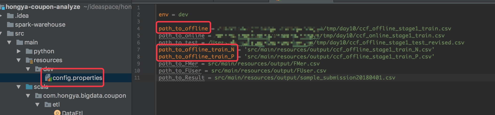
然后打开idea自带的终端，输打包命令：mvn clean install -P dev
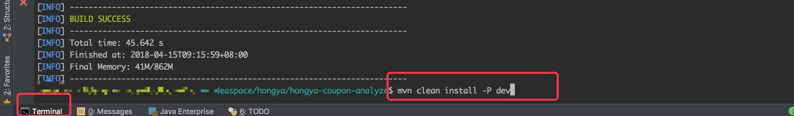
稍等编译完成就可以点击DataEtl类的运行：
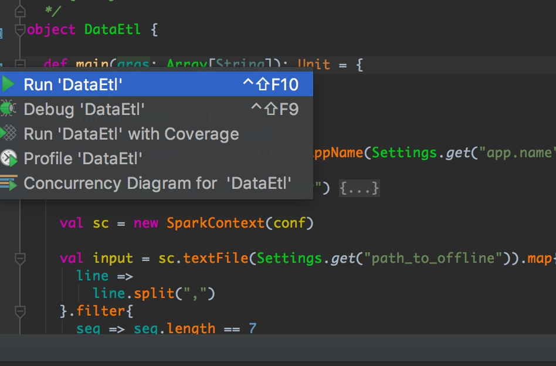
运行完成后你会在你配置的路径下面看到输出文件： 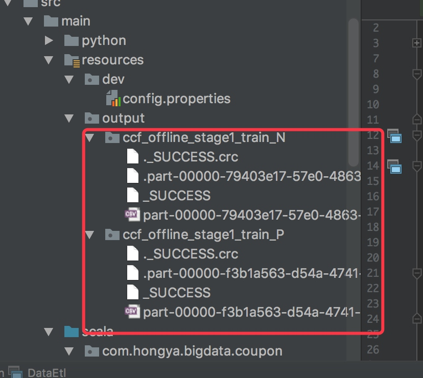
2.特征工程部分代码
我们首先要取到数据进行特征提取。类似前面的逻辑，首先在com.hongya.bigdata.coupon.feature包下面新建UserFeature类，添加提取用户特征的代码：
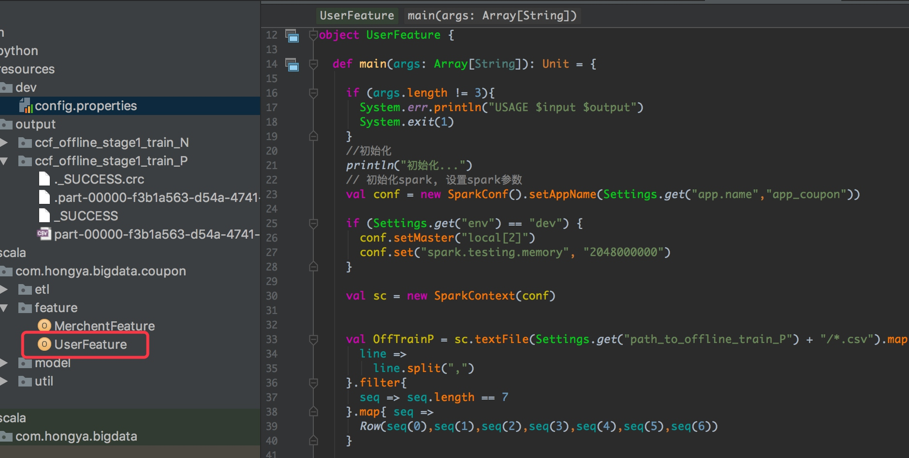
代码详情可以查看源码，注意我们使用了一个sql语句提取用户特征：
select
a.user_id,
b.FUser1,
c.FUser2
from
(select distinct user_id from train_P ) a
left join
(select user_id,sum(1) as FUser1 from train_P group by user_id) b
on
a.user_id = b.user_id
left join
(select user_id,sum(1) as FUser2 from train_P where date<>'null' group by user_id) c
on
a.user_id = c.user_id
这个sql的含义大家自己理解，我们可以使用更加复杂的sql提取更多特征。 然后我们在配置文件配置用户特征的保存路径： 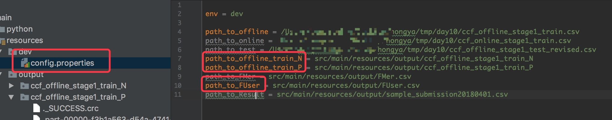
点击运行代码： 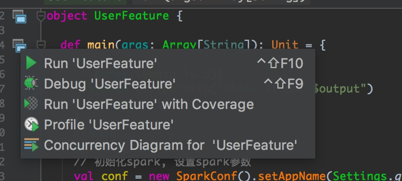
运行完成后可以看到我们配置的目录下有用户特征文件: 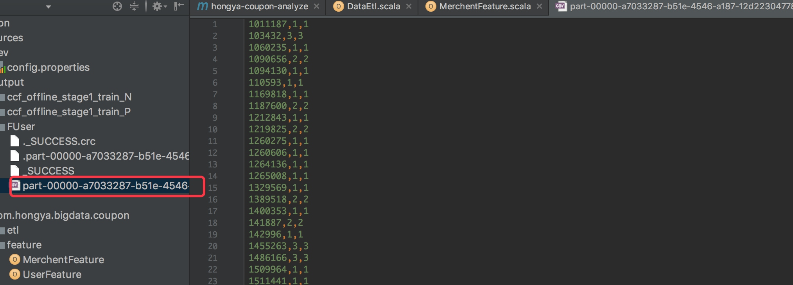
同理新建MerchantFeature文件： 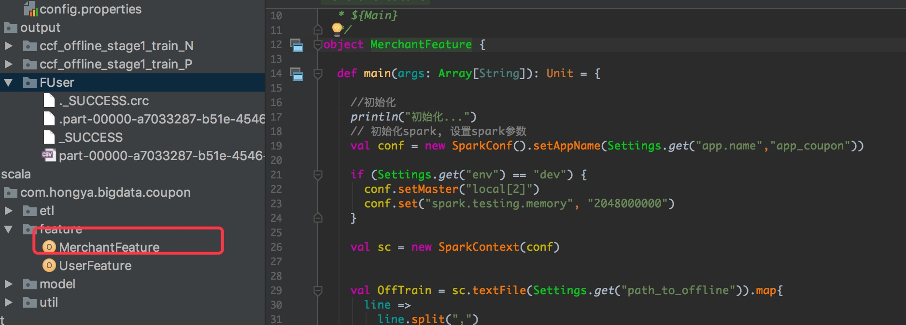
注意我们获得特征的代码：
select
a.merchant_id,
b.FMer1,
c.FMer2,
d.FMer3
from
(select distinct merchant_id from train ) a
left join
(select merchant_id,sum(1) as FMer1 from train where coupon_id<>'null' group by merchant_id) b
on
a.merchant_id = b.merchant_id
left join
(select merchant_id,sum(1) as FMer2 from train where coupon_id<>'null' and date<>'null' group by merchant_id) c
on
a.merchant_id = c.merchant_id
left join
(select merchant_id,sum(1) as FMer3 from train where date<>'null' group by merchant_id) d
on
a.merchant_id = d.merchant_id
添加merchant配置： 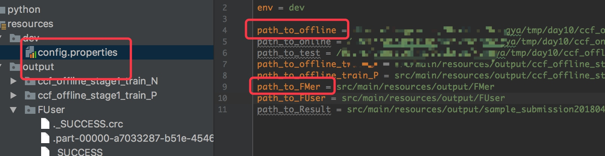
然后点击运行，完成后会有FMer文件夹生成，数据有空值，这需要我们后续处理的时候进行进一步填值： 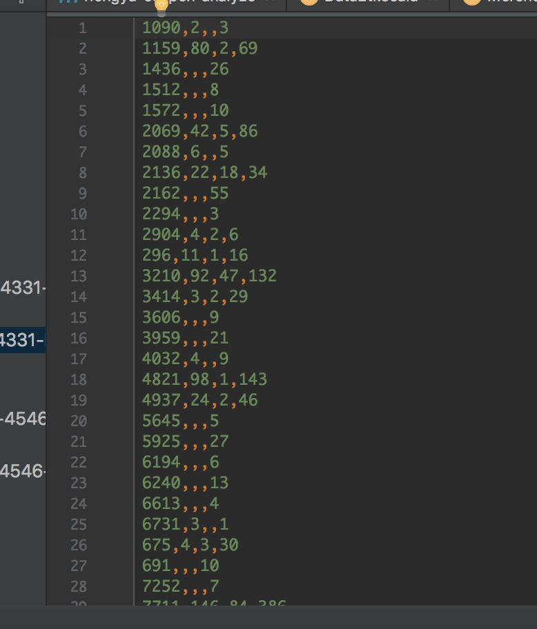
3.建模预测
新建模型计算的代码，读取数据进行预测，相关代码可以参考源码： 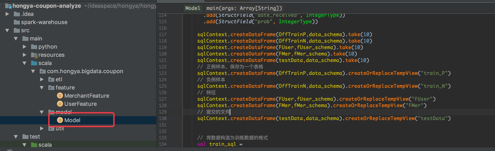
注意我们使用了sql语句将数据变成我们模型的入口格式：
select
a.user_id,
a.merchant_id,
coalesce(b.FUser1,0) as FUser1,
coalesce(b.FUser2,0) as FUser2,
coalesce(c.FMer1,0) as FMer1,
coalesce(c.FMer2,0) as FMer2,
coalesce(c.FMer3,0) as FMer3,
a.label as label
from
(
select
user_id ,
merchant_id,
1 as label
from
train_P
union all
select
user_id ,
merchant_id,
0 as label
from
train_N
) a
left join
FUser b
on
a.user_id = b.user_id
left join
FMer c
on
a.merchant_id = c.merchant_id
另外我们使用类似的sql将需要提交的数据变成我们模型的输入格式：
select
a.user_id,
a.merchant_id,
a.coupon_id,
a.date_received,
coalesce(b.FUser1,0) as FUser1,
coalesce(b.FUser2,0) as FUser2,
coalesce(c.FMer1,0) as FMer1,
coalesce(c.FMer2,0) as FMer2,
coalesce(c.FMer3,0) as FMer3
from
(
select
user_id ,
merchant_id,
coupon_id,
date_received
from
testData
) a
left join
FUser b
on
a.user_id = b.user_id
left join
FMer c
on
a.merchant_id = c.merchant_id
然后我们将原始数据分成两部分分别进行模型计算和测试，最后用模型计算天池提供的数据，生成提交文件。整个过程需要一定的时间，完成后会生产提交文件的文件，放在我们配置的文件中。
四、集群部署
1.生产环境配置
我们前面配置了开发环境，现在改为生产环境即可，在resources下新建prod文件夹，和dev一样： 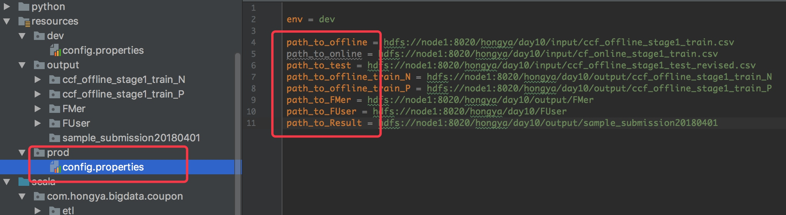
然后将config.properties的配置也改一下即可，注意修改相应的配置为你的机器配置。然后启动项目即可:
env=prod
# 配置输入路径
path_to_offline = hdfs://node1:8020/hongya/day10/input/ccf_offline_stage1_train.csv
path_to_online = hdfs://node1:8020/hongya/day10/input/cf_online_stage1_train.csv
path_to_test = hdfs://node1:8020/hongya/day10/input/ccf_offline_stage1_test_revised.csv
path_to_offline_train_N = hdfs://node1:8020/hongya/day10/output/ccf_offline_stage1_train_N
path_to_offline_train_P = hdfs://node1:8020/hongya/day10/output/ccf_offline_stage1_train_P
path_to_FMer = hdfs://node1:8020/hongya/day10/output/FMer
path_to_FUser = hdfs://node1:8020/hongya/day10/FUser
path_to_Result = hdfs://node1:8020/hongya/day10/output/sample_submission20180401
然后我们打包，执行命令：
mvn clean install -P prod
打完包以后可以看到 hongya-broker-analyze/order-handle/target 目录下有两个jar包，其中比较大一点的就是完整的jar，小一点的是我们代码编译后的输出。然后我们复制这个大一点的jar到集群环境下，提交相应的任务即可，一共三个任务：
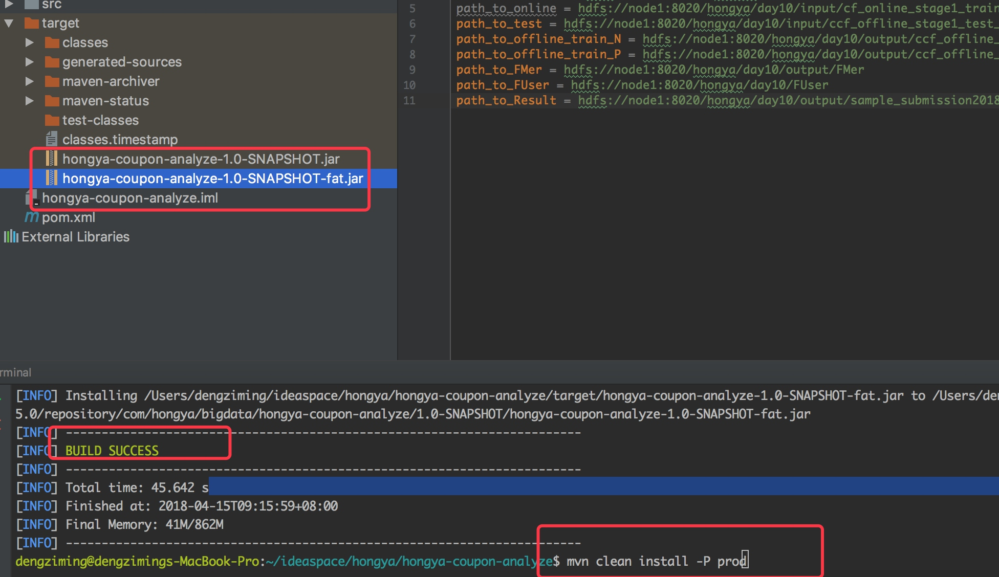
2.启动
我们将jar包和生产环境下的config.properties拷贝到集群环境下，再将原始的数据上传到hdfs上面，然后提交任务。 ETL任务的启动命令：
${SPARK_HOME}/bin/spark-submit --master=yarn --deploy-mode=cluster \
--num-executors 5 \
--executor-memory 4g \
--executor-cores 1 \
--driver-memory 2g \
--driver-cores 1 \
--files config.properties \
--class= com.hongya.bigdata.coupon.etl.DataEtl \
--conf spark.dynamicAllocation.enabled=false \
--name=hongaya_coupon_analyze_etl \
hongya-coupon-analyze-1.0-SNAPSHOT-fat.jar
然后就可以在浏览器访问yarn的的8088端口查看应用程序了。执行完成后，可以用hadoop命令查看对应的路径上面的文件。
第二个任务,提取商户特征：
${SPARK_HOME}/bin/spark-submit --master=yarn --deploy-mode=cluster \
--num-executors 5 \
--executor-memory 4g \
--executor-cores 1 \
--driver-memory 2g \
--driver-cores 1 \
--files config.properties \
--class= com.hongya.bigdata.coupon.feature.MerchantFeature \
--conf spark.dynamicAllocation.enabled=false \
--name=hongaya_coupon_analyze_merchant_feature \
hongya-coupon-analyze-1.0-SNAPSHOT-fat.jar
第三个任务，提取用户特征：
${SPARK_HOME}/bin/spark-submit --master=yarn --deploy-mode=cluster \
--num-executors 5 \
--executor-memory 4g \
--executor-cores 1 \
--driver-memory 2g \
--driver-cores 1 \
--files config.properties \
--class= com.hongya.bigdata.coupon.feature.UserFeature \
--conf spark.dynamicAllocation.enabled=false \
--name=hongaya_coupon_analyze_user_feature \
hongya-coupon-analyze-1.0-SNAPSHOT-fat.jar
第四个任务，新建模型并生成结果：
${SPARK_HOME}/bin/spark-submit --master=yarn --deploy-mode=cluster \
--num-executors 5 \
--executor-memory 4g \
--executor-cores 1 \
--driver-memory 2g \
--driver-cores 1 \
--files config.properties \
--class= com.hongya.bigdata.coupon.model.Model \
--conf spark.dynamicAllocation.enabled=false \
--name=hongaya_coupon_analyze_user_feature \
hongya-coupon-analyze-1.0-SNAPSHOT-fat.jar
当然这几个任务你可以放在一个shell脚本中，一次性提交。
3.查看结果数据
结果保存在我们配置的path_to_Result中，我们通过hadoop命令即可查看，为了验证准确率，我们可以提交到天池的官网上面进行验证，相关步骤可以查看天池官网，经过验证了我们的模型准确率只有59%左右，基本上就比随机猜好一点点，这也是因为我们对数据的建模比较粗糙，大家可以提取更多的特征进行分析。
五、实验总结
1.注意事项
- 测试环境下的开发过程比较需要一步一步来，数据量可能比较大，大家可以自己从文件中截取一千行作为测试数据；
- 使用python进行数据分析的过程是我们从数据清洗、特征工程、建模、预测的完整步骤，大家需要一步一步亲自动手才行，最好多操作几遍；
- 使用spark和python进行分析的过程大家可以对比，python是动态语言，所以在类型操作更加方便，python代码更加简介。但是spark实际上也不复杂，而且我们使用的是低版本的spark风格，实际上高版本的spark直接基于DataFrame代码就很简洁了。
2.心得体会
- 数据分析大部分时间都是特征工程，建模时间是很少的，建模最复杂的是调参；
- spark机器学习库和python的机器学习操作代码是很类似的， 所以大家只要掌握了一种工具，再学习另外一种就很简单了；
- 本次实验体验了一次天池大数据竞赛的题目，对于数据分析项目有了更加深入的理解，以后能后快速上手类似的数据分析项目。
源码地址：https://github.com/dengziming/hongya-coupon-analyze